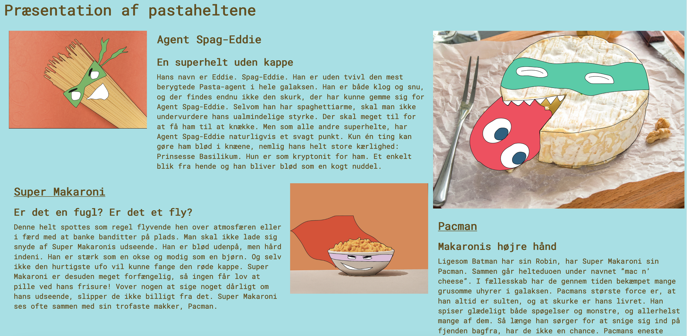

Tema 02 - Grundlæggende web
Video game style retro design
Mit site er lavet med ’video game style retro design’ og jeg har med både valg af koncept, fonttype og splashbillede forsøgt at understøtte denne stilart. Sitet handler om Planet Pastaría, hvor en række helte og skurke kæmper mod hinanden, og der indgår flere referencer til retro spil. Fonttypen skulle gerne drage associationer til 90’ernes computerspil med simpel og pixeleret grafik, på samme måde som splashbilledet er redigeret til at være af pixels med filtre i Photoshop.
